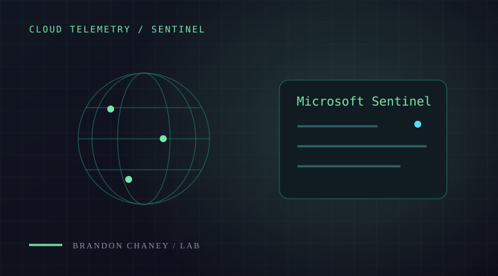

PROJECT / 01
PROJECT / 01DETECTION & RESPONSE
Automated SOC Pipeline
From endpoint telemetry to an investigation case. Wazuh, Shuffle, and TheHive connected in one response workflow.
WazuhShuffleTheHive
View projectTHE WORK
Practical investigations, response workflows, and tools. Each project includes the process behind the result.
PROJECT EVIDENCE
Automated enrichment, TheHive alert creation, and analyst notification.
Classifies indicators, correlates threat intelligence, and exports JSON / CSV.
Recovered HTTP objects, identified scan patterns, and examined authentication and TLS.
Collected attack telemetry and mapped source locations in Microsoft Sentinel.
PROJECT / 01DETECTION & RESPONSE
From endpoint telemetry to an investigation case. Wazuh, Shuffle, and TheHive connected in one response workflow.
 PROJECT / 02
PROJECT / 02PYTHON / THREAT INTELLIGENCE
A Python tool for batch indicator enrichment, VirusTotal and OTX lookups, and risk summaries that support triage.
 PROJECT / 03
PROJECT / 03PACKET INVESTIGATION
Seven Wireshark investigations covering HTTP recovery, reconnaissance, SMB authentication, Kerberos, and TLS.

PROJECT / 04CLOUD / SECURITY MONITORING
Attack telemetry from a Windows VM, investigated with Microsoft Sentinel, KQL, and a geolocation dashboard.
Interested in how I worked through the evidence?
Explore the field notes